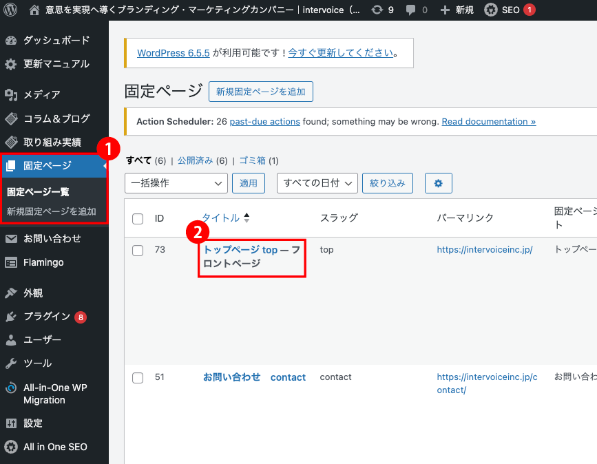
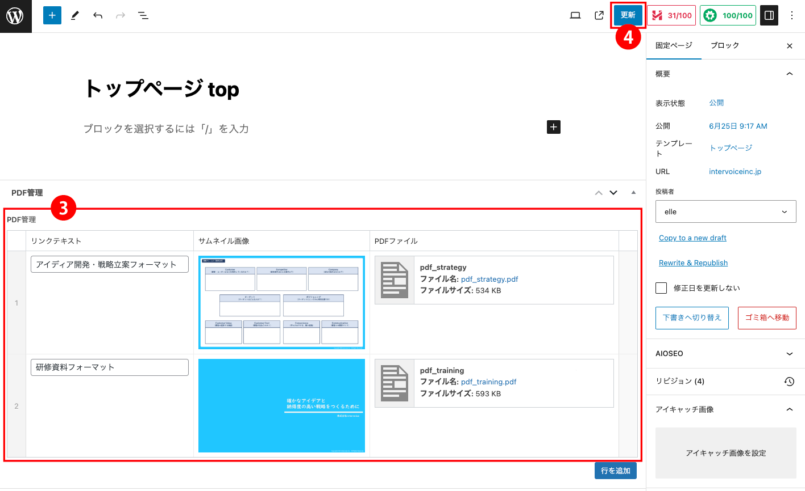

intervoice
【思考と学びのベースフレーム】WordPress更新マニュアル
2024.7.8 更新
メニュー
思考と学びのベースフレームを追加する
- 固定ページ「トップページ top」で管理させております。
- ▼固定ページ「トップページ top」編集画面


- 「固定ページ」へ進みます
- 「トップページ top」へ進みます
- PDF管理
PDF項目を入力します。
・リンクテキスト
・サムネイル画像
・PDFファイル
を入力してください
青ボタン「行を追加」クリックで、行数を増やすことができます。
増やした行は、マウスドラックで順番の入れ替えが可能。
丸マイナスアイコンで行を削除できます。
- 更新
「更新」をクリックして完了です。